Chapter 10 explains the calculation of currents in the event of a short circuit somewhere in the network. For various types of short circuits, it is extensively described how, based on the internationally recognized standard IEC 60909, the current at the short circuit location and the contribution to the short circuit current from other parts of the network can be calculated. The method of sequential fault analysis is also explained, which can provide more information about currents and voltages during a short circuit.
Electrical installations must be designed and constructed in such a way that no danger arises for individuals in the event of short circuits and that the installation is not damaged. During short circuits, large currents flow, resulting in significant electromagnetic forces between the conductive parts. Additionally, the conductive parts heat up quickly. The consequences of a short circuit can be mitigated with effective protection capable of interrupting the highest occurring short-circuit current. Short-circuit calculations play a crucial role in the design of the electrical network. These calculations investigate whether the network components can withstand short circuits when they occur. The short-circuit current calculation focuses on determining the current behavior in the electrical network and the physical properties of the network component. The purpose of these calculations is threefold:
A short circuit is generally accompanied by a relatively large current. In this case, the square of the current value is proportional to:
The impact of both effects must be investigated for all network components through which the increased current due to the short circuit flows. In distribution networks, it turns out that the thermal effect deserves the most attention. However, the dynamic effect must also be calculated because of the sometimes very large forces that can occur in the installations. For this reason, components are tested to minimize the damage to people and the environment when allowing a short-circuit current to pass through.
As an example of the forces released during a short circuit, figure 10.1 shows the result of a short circuit in a 10 kV cable buried at a depth of 60 cm. The short-circuit current was approximately 8 kA. The force of the explosion was so great that the ground next to the pit was lifted, causing the sidewalk tiles to be displaced.

For the calculation of short-circuit strength, it is important to know the maximum value of the short-circuit current. For the coordination of protections and selectivity, the minimum short-circuit current is also important. With good selectivity, the consequences of faults are limited.
It is possible to calculate a reasonably accurate picture of the current behavior at the fault location over time using a dynamic simulation, from the onset of the short circuit to the moment it is cleared. However, in most practical cases, such an extensive calculation is not necessary. Only a few characteristic values of the current behavior are important. These can be determined with sufficient accuracy using simpler methods, two of which are discussed in this chapter:
To get a good understanding of the behavior of a short-circuit current, figure 10.2 shows the progression of the current during a three-phase short circuit. In this example, the short circuit is electrically far from a generator. It is noticeable that the current starts at a small value and then reaches a value of nearly twice the amplitude of the short-circuit current. This highest current value occurs within the first period of the short-circuit current and is referred to as the peak value.ip mentioned. The maximum value thatipcan assume can be reached if the short circuit begins at the moment of the voltage zero crossing in the involved phase. In a three-phase system, this can only occur in one phase at a time, and therefore this maximum can only occur in that particular phase. The highest peak value of the short-circuit current is also referred to as the peak short-circuit current.
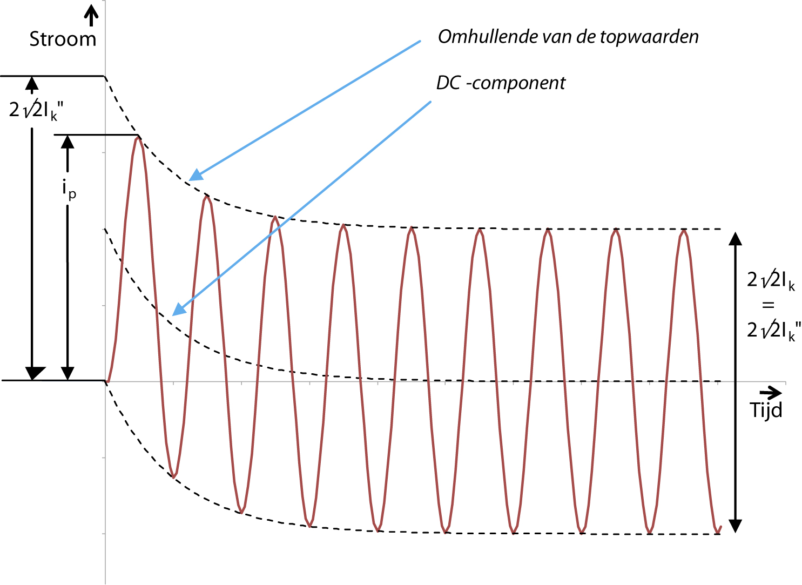The effective value of the short-circuit current immediately after the onset of the short circuit is the initial short-circuit current.Ik"The initial short-circuit current is the basis for all other quantities that play a role in the calculation of the short-circuit load. In the example of Figure 10.2, the peak-to-peak value of the short-circuit current, determined by the mutual distance of the lines connecting the positive peaks and the negative peaks of the sinusoidal alternating current, is constant. The distance between the envelope lines relative to each other is equal to2√2 ⋅ Ik".
There is an exponentially decaying direct current component, indicated in figure 10.2 by the middle dashed line. Its value is equal to the average value of the short-circuit current. The direct current component causes a high initial peak in the short-circuit current. The height of this peak depends on the location of the short circuit in the network. Figure 10.3 shows the current behavior during a three-phase short circuit that occurs electrically close to a generator. When comparing this figure with figure 10.2, it is noticeable that the alternating current component between the envelope lines in figure 10.2 has a constant amplitude, but in figure 10.3, it has a decreasing amplitude. This difference is caused by the fact that a generator, which is close to the short circuit, has a relatively large influence on the short-circuit current. The impedance of the generator increases over time as it generates its contribution to the short-circuit current, resulting in a decrease in the short-circuit current contribution from this generator.

Over time, the transient phenomenon in the short-circuit current will be damped, and the steady-state short-circuit current will flow.Ik. In the case of a short circuit far from the generators, the effective value of the short-circuit current hardly decreases, if at all, so the steady-state short-circuit current is assumed to be equal to the initial short-circuit current:Ik= Ik".
The IEC 60909 standard uses the terms 'far from generator' and 'near generator' as two extremes. In the first case, the contribution of synchronous generators to the short-circuit current is taken into account, and in the second case, it is not. According to IEC 60909, for a short circuit 'far from generator':
In this case of a short circuit 'far from the generator,' the short-circuit current consists of the sum of the following two components:
The IEC 60909 standard defines a 'near generator' short circuit as follows:
In the case of a 'near generator' short circuit, the short-circuit current consists of the sum of the following two components:
In distribution networks, most short circuits are currently of the 'far from generator' type. If the network includes large motors and decentralized generation, the method for a 'near generator' short circuit must be used.
In every short circuit, there is a symmetrical alternating current component. The effective value of this at the beginning of the short circuit is called the initial short-circuit current or sub-transient short-circuit current.Ik"called. This quantity is the basis for all other quantities that play a role in the calculation of the short-circuit load. Using the nominal coupled voltageUnomthe apparent initial short-circuit power isSk"calculated:
 |
[ |
10.1 |
] |
The short-circuit power is a fictitious quantity that is often used instead ofIk"is used. In most cases, only the maximum value ofIk"important. For security issues, the minimum value must also be known.
The direct current component (DC component) is the average value of the short-circuit current. It decreases over time, from an initial value determined at the beginning of the short circuit, to zero. The maximum direct current component is calculated using formula 10.2, which includes the frequency and the R/X ratio in the short-circuit path.
[ |
10.2 |
] |
The impulse short-circuit current or the peak currentiprepresents the highest peak value of the short-circuit current, including any possible direct current component. This quantity is used in determining the dynamic short-circuit load. The maximum current load of a switchgear and distribution system is specified by the manufacturer. The impulse short-circuit current that may occur in the installation must be below the value specified by the manufacturer. The relationship between the impulse short-circuit currentipand the initial short-circuit currentIk"is:
 |
[ |
10.3 |
] |
The impulse factorκin expression 10.3 depends on the R/X ratio in the short-circuit path and can be calculated using formula 10.4. Figure 10.4 shows the relationshipκ = f(R/X)graphically.
 |
[ |
10.4 |
] |
If only the initial short-circuit currentIk"is known and not the R/X ratio, a value of 1.8 can be taken for the impulse factor. This is conservative because a high R/X ratio only applies to short circuits in the vicinity of power supplies. Generally, the impulse factor in medium-voltage distribution networks is lower.
Usually, it isipcalculated using the three-phase short-circuit currentIk"3. In asymmetric short circuits, the same value forkare used. The results are then on the safe side.
The R/X ratio in the simplest case of a radial operated network follows directly from the sum of the individual R and X values. If the network is meshed, IEC 60909 provides three methods to calculate the peak short-circuit current. In method b of the relevant IEC standard, a factor is used.κ(b)found from the ratio R/X of the short-circuit impedance at the fault location. The value ofipthen follows from formula 10.5. Here, the factor 1.15 represents a correction for different R/X ratios in the network.
[ |
10.5 |
] |
From the moment of the short circuit until the beginning of disconnection (first switch pole), the value of the short-circuit current will decrease. The effective value at the moment of disconnection is called the interrupting alternating current.Ibcalled. The IEC 60909 standard describes the method to calculate the interrupting alternating current for disconnection at 20, 50, 100, and 250 ms after the onset of the short circuit.
Over time, the transient phenomenon in the short-circuit current will be damped, leaving the steady-state short-circuit current.Ik. It is assumed that motors no longer contribute and that the rotors of the generators are saturated, causing them to contribute less than at the beginning of the short circuit.
This quantity is calculated to determine the thermal short-circuit strength of network components.
A short-circuit current generally has a decreasing direct current and alternating current component, and therefore decreases in strength. To easily determine the thermal effect of the short-circuit current, the thermal short-duration current is used.ithThis is a constant effective value that has the same thermal effect and the same duration as the actual short-circuit current.
The relationship between the thermal short-duration currentithand the initial short-circuit currentIk"is shown in formula 10.6.
[ |
10.6 |
] |
with:
| m | correction factor for the direct current component, which depends on the disconnection time and the peak factorκ |
| n | correction factor for the decreasing alternating current component, which depends on the disconnection time and the ratioIk/ Ik. |
The factorsmennrepresent the thermal effect of the direct current component and the alternating current component of the short-circuit current, respectively. These are described in the IEC 60909 standard. Figure 10.5 shows the factormas a function of the short-circuit durationTk. for various values of the peak factor κ, ranging from 1.1 to 1.95. In figure 10.5, it is clearly visible that the factormfor networks with a small peak factor, it quickly becomes small with increasing short-circuit duration.

Figure 10.6 shows the factornas a function of the short-circuit durationTk. for various values of the ratio of the initial short-circuit currentIk"and the steady-state short-circuit currentIk, ranging from 1.25 to 10. IfIkis equal toIk",may be assumed according to IEC 60909 that the factornis equal to 1. In the figure, it is clearly visible that the factornfor networks with a small ratio ofIk"enIkslowly decreases with increasing short-circuit duration.
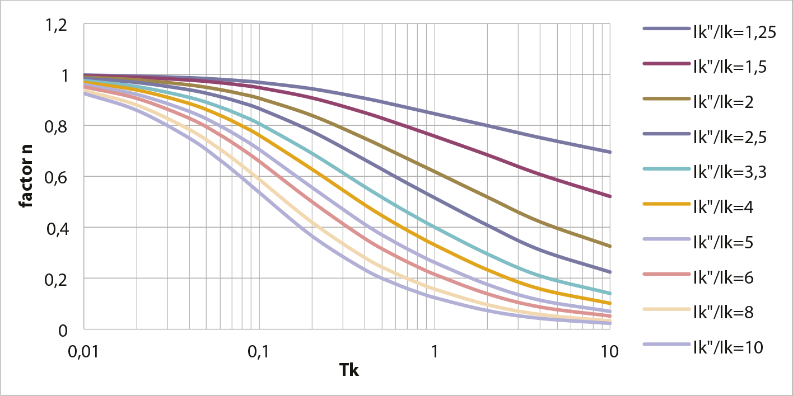In distribution networks, where it is assumed that few machines are connected, a value of according to the standard is allowed.n = 1are used. The standard also states that for short circuits far from the generator, where the duration of the short circuit averages 0.5 seconds or more, it is permissible to assumem+n = 1, so thatithis equal toIk".
In summary, two aspects are of great importance in the design phase of a distribution network:
The short-circuit current calculation according to IEC 60909 is fundamentally defined as a method that can be performed manually. Moreover, efforts have been made to design the method in such a way that there are as few points of contention as possible. The calculation results can be easily assessed and reproduced by third parties. Because many designers in the industry need to refer to an internationally recognized standard, the method according to IEC 60909 is often preferred. For this reason, responsible assumptions and omissions have been incorporated, which are partly compensated by correction factors.
The method according to IEC 60909 is a worst-case approach used to determine the highest value of the short-circuit current. This involves a number of assumptions and simplifications when creating the network model for the calculation:
The aforementioned assumptions and simplifications lead to a passive model of the network without power sources. All power supplies, synchronous and asynchronous machines are replaced by their internal impedances. In this passive network, an equivalent voltage source is placed at the short-circuit location, as shown in figure 10.7 and figure 10.8. The magnitude of the voltage is:
[ |
10.7 |
] |
The correction factorcwas introduced due to several omissions and assumptions and to account for deviations from the ideal situation, such as:
The voltage factorcdepends on the voltage level and the choice of whether the minimum short-circuit currentIk,min(factorcmin) or the maximum short-circuit currentIk,max(factorcmax) must be calculated. Table 10.1 shows the values for the corresponding c-factor.
Spanningsniveau |
Spanning |
cmax |
cmin |
LS |
Voltage tolerance +6% |
1.05 |
0.95 |
Voltage tolerance +10% |
1.10 |
0.95 |
|
MS |
1 kV < Unom≤ 35 kV |
1.10 |
1.00 |
HS |
Unom> 35 kV |
1.10 |
1.00 |
The currents in the passive network, which arise as a result of the application of the voltage source, are equal to the fault currents in the network, while the total current supplied by the voltage source is equal to the short-circuit current at the fault location.
Figure 10.7 shows a simple network consisting of three nodes. Node K1 is connected to the power supply, and node K3 contains a load, a generator, and a motor. A symmetrical short circuit is assumed at node K2.

According to IEC 60909, for the calculation of the short-circuit current, the network can be replaced by the equivalent circuit as shown in figure 10.8. The grid supply is replaced by the short-circuit impedance. The voltage source of the grid supply is short-circuited in this case. The transformer and the cable are replaced by their impedances. The rotating machines are replaced by their short-circuit impedances. Loads and shunts are disregarded. Capacitances of connections of the normal and inverse system are also disregarded.
At the fault location K2, a voltage source is now applied with a value according to equation 10.7. This value represents the voltage at this node in the undisturbed situation. By simplifying the network in figure 10.8, the short-circuit current can be calculated.
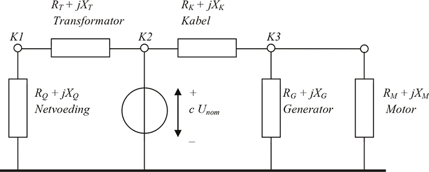Because the fault is a three-phase symmetrical short circuit, only the network of the positive-sequence component is relevant for the calculation. Therefore, it is sufficient to consider only the positive-sequence impedances.Z1determined. For the calculation of other types of short circuits, such as between two phases and between phase and ground, the zero-sequence impedance must also be considered.Z0and the inverse impedanceZ2are determined. In the homopolar network, the equivalent circuit of the transformer requires special attention, as discussed inparagraph 8.3.6.
By simplifying the equivalent circuit of figure 10.8 to a single impedanceZ1, the three-phase short-circuit current canIk"can be easily determined from the series and parallel connections of the individual impedances:
[ |
10.8 |
] |
All branches (transformers, cables, inductors) and active elements (power supply, generators, motors) have been replaced by short-circuit impedances.R+jXThe impedances are described inchapter 8(Models). Table 10.2 provides a summary of the method by which the impedances of the main network components can be calculated from generally known data.
The calculation of the maximum and minimum short-circuit current is based on a number of simplifications:
With these simplifications, the short-circuit current can be calculated with sufficient accuracy. The method is established in the IEC 60909 standard and is globally accepted.
Component |
Resistance and reactance |
Complex impedance and correction factor |
Netvoeding |
||
Cables and lines |
 |
 |
Transformatoren |
 |
 |
Smoorspoelen |
 |
 |
Synchronous generators and motors |
 |
 |
Asynchronous motors |
The maximum short-circuit current is calculated to investigate the short-circuit strength of the network components. When calculating maximum short-circuit currents in a network, a factorcmaxused. This calculation is based on:
This calculation is applied to investigate the proper functioning of protection devices in the network, particularly for determining whether the protection will activate and establishing selectivity between consecutive protection devices. In the calculation of minimum short-circuit currents in a network, a factor is used.cminused. The calculation is based on:
The protection system must be designed for the disconnection of short-circuit currents and ground fault currents. It is important to be aware of the gray area between the maximum allowable current of the protected objects and the activation level of the protection, particularly in relation to the inrush currents of large motors.
In every electrical network, short circuits can occur in various ways. A distinction is made between: short circuits between 3 phases, short circuits between 2 phases, with or without ground contact, and short circuits between one phase and ground. In calculations, the method of symmetrical components is used.chapter 7). Using this method, the short-circuit current for the situations in figure 10.9 can be calculated using simple formulas. To determine the impedances of the components in the network, the models described inchapter 8.


The basis for short-circuit current calculations is established by the interconnections of the symmetrical component networks (Happoldt, 1978). For each symmetrical component, a model of the network is created, after which the type of short circuit determines how the positive, negative, and zero-sequence component networks are interconnected. The phase currents and phase voltages can be determined after the transformation back (see chapter 7) calculated from the component currents and component voltages. The circuits for the four types of short circuits are summarized in figure 10.10. In this figure,Zk,1,Zk,2enZk,0the short-circuit impedance of the normal, inverse, and homopolar network at the fault location, respectively, and isZfthe impedance of the short circuit. The voltage source in the component networks is the nominal phase voltage.
In short-circuit calculations according to IEC 60909, the impedance of the short circuitZfalways zero Ohms and the component currents are notI1,I2enI0calculated, but the short circuit currentIkat the fault location, causing the value of the voltage source to be the nominal coupled voltage, multiplied by thec-factor.


For symmetrical short circuits, only the normal impedance appears to be relevant.Z1) is important. For asymmetrical short circuits, the inverse impedance must also be considered.Z2) are determined. In most cases (far from the generator), this is assumed to be equal to the normal impedance (Z1=Z2). If the short circuit occurs between one or two phases and ground, the homopolar impedance must also be consideredZ0) are determined.
From the symmetrical component circuits of figure 10.10, the formulas for short-circuit current calculations according to IEC 60909 are derived. In this, component currents and phase voltage are not used, but rather the coupled voltage and phase currents. Table 10.3 provides an overview of the calculation of short-circuit currents according to IEC 60909. In this,Unomthe nominal coupled voltage at the fault location and isZk,1the short-circuit impedance at the fault location in the normal system,Zk,2the short-circuit impedance at the fault location in the inverse system andZk,0the short-circuit impedance at the fault location in the homopolar system. For a two-phase short circuit with ground contact, the complex operatorsaena2(seeparagraph 7.5) used.
Type of short circuit |
Kortsluitstroom |
Three phases |
|
Two phases without ground contact |
|
Two phases (b and c) with ground contact |
 |
One phase with ground contact |
 |
A three-phase short circuit almost always produces the largest short-circuit current. In some cases, a phase-to-ground short circuit produces the largest short-circuit current. The magnitude depends on the grounding method in the medium-voltage (MV) and low-voltage (LV) networks. Many MV networks are ungrounded, so the phase-to-ground short-circuit current is mainly determined by the capacitance to ground of all connected cables in the MV network (seechapter 5). If the zero-sequence impedanceZ0at the short-circuit location is less thanZ1enZ2, the phase-to-ground fault current will be greater than the three-phase fault current. This situation can occur with a short circuit at the low-voltage terminals of a distribution transformer. The two-phase short circuit is less significant in the design phase and is therefore not performed as often.
The network from figure 10.7 is repeated below in figure 10.11. In the network of figure 10.11, the calculations of the maximum short-circuit current for a short circuit at the MV node K2 are explained using an example. The MV section is not grounded. The data of the network and the components are summarized in table 10.4.
Nodes:
|
Grid supply:
|
Transformer:
|
||||||||||||||||||||||||||||||||||||||
Cable:
|
Motor:
|
Generator:
|
||||||||||||||||||||||||||||||||||||||
Load:
|
The equivalent circuit diagram from figure 10.8 is repeated below in figure 10.12.
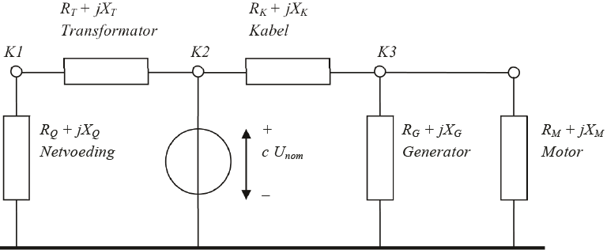For the calculation of the three-phase short-circuit current in the equivalent circuit diagram of figure 10.12, the internal impedances of all components are first calculated. All impedances are referenced to the voltage level at the short-circuit location. For the network supply on the high-voltage side:
 |
[ |
10.9 |
] |
Because the short circuit is located at the MV node K2, the impedance of the HV network supply must be converted to an equivalent impedance at the MV level. This is done using the transformer’s turns ratio. For the network supply, corrected for the transformer’s turns ratio:
 |
[ |
10.10 |
] |
For the transformer:
 |
[ |
10.11 |
] |
For the cable applies:
 |
[ |
10.12 |
] |
For the generator applies:
[ |
10.13 |
] |
For the motor applies:
[ |
10.14 |
] |
In the equivalent circuit of figure 10.12, the impedance to the left of node K2 and thus to the left of the voltage source is equal to the series connection of the impedances of the power supply and the transformer:
[ |
10.15 |
] |
In the equivalent circuit of figure 10.12, the impedance to the right of the voltage source is equal to the series connection of the cable impedance and the parallel connection of the generator and motor impedances. The impedance of the load is neglected:
[ |
10.16 |
] |
The total impedance at the fault location is then equal to the parallel connection of the impedances to the left and right of the voltage source:
 |
[ |
10.17 |
] |
Now the three-phase short-circuit current at fault location K2 can be calculated:
 |
[ |
10.18 |
] |
The contribution from the feeding side, to the left of the voltage source in figure 10.12, is equal to:
[ |
10.19 |
] |
This is the short-circuit current supplied by the mains power and the transformer.
The contribution from the motor and the generator, to the right of the voltage source in figure 10.12, is equal to:
 |
[ |
10.20 |
] |
The short-circuit current for a two-phase short circuit without ground contact at fault location K2 can now also be determined, provided that in accordance with IEC 60909 the inverse impedance is set equal to the normal impedance.Zk,2=Zk,1). The two-phase short-circuit current at the fault location is then according to table 10.3:
[ |
10.21 |
] |
In the same manner, the short-circuit current at node K3 can also be easily determined. To do this, the equivalent voltage source in figure 10.12 must be moved from node K2 to node K3. Regarding the impedances, the diagram remains unchanged, as shown in figure 10.13.
The impedance to the left of node K3 in figure 10.13 is equal to the series connection of the impedances of the power supply, the transformer, and the cable:
[ |
10.22 |
] |
In the diagram of figure 10.13, the impedance to the right of the power supply at node K3 is equal to the parallel connection of the generator and motor impedances. The impedance of the load is again neglected:
 |
[ |
10.23 |
] |
The total impedance at the fault location K3 is then equal to the parallel connection of the impedances to the left and right of the power supply:
 |
[ |
10.24 |
] |
This allows the three-phase short-circuit current at fault location K3 to be calculated:
[ |
10.25 |
] |
The short-circuit power at fault location K3 is calculated using the nominal voltage:
 |
[ |
10.26 |
] |
The R/X ratio at fault location K3 is derived from the impedance at the fault location (equation 10.24) and is equal to:
 |
[ |
10.27 |
] |
With the R/X ratio and the three-phase short-circuit current, the peak short-circuit current can be calculated using formulas 10.3 and 10.4:
[ |
10.28 |
] |
The network in figure 10.11 is, according to the data in table 10.4, an MV network. The HV/MV transformer has a star-delta configuration, making it a floating MV network. In a floating network, the phase-to-ground short-circuit current is largely determined by the capacitance to ground of all cables. To calculate the phase-to-ground short-circuit current, the zero-sequence impedance must be considered.Z0of the network at the short-circuit location can be determined. The data to be used can be found in figure 10.9.d and figure 10.10.d. In the network diagram in the homopolar system, the equivalent circuits of the transformers and rotating machines differ from the diagram in the normal system. These differences result in the circuit shown in figure 10.14 in the example. It is notable that the transformer, due to the delta connection on the secondary side, does not form a connection with the high-voltage side (see alsochapter 8). Moreover, the motor and the generator have no homopolar impedance because it is assumed that the windings are connected in a delta configuration. The cable is represented with a Pi-equivalent for the homopolar capacitance (twicejXk0,transverse/2) and the homopolar longitudinal impedanceRk,0+jXk,0).
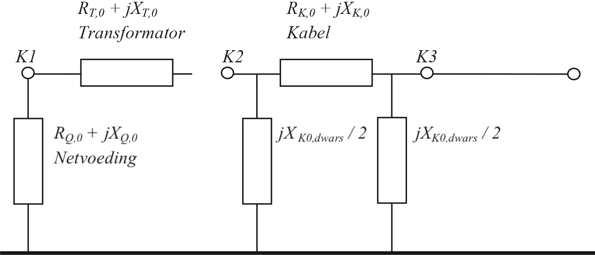OmdatZk,0much smaller thanZk0,transverse, the homopolar Pi-equivalent of the cable can be simplified to a single transverse impedanceZk0,transverse. The value of this is calculated from the homopolar capacitance:
[ |
10.29 |
] |
This is the only homopolar impedance at fault location K2, so this value can be inserted into the formula for the phase-to-earth short-circuit current from table 10.3.Zk,1=Zk,2):
 |
[ |
10.30 |
] |
The network in figure 10.7 has only a small MV section. Most MV networks are fed via a substation, to which about 20 feeders are connected, each easily having a length of 10 km. Figure 10.15 shows a network where the 20 feeders are represented by an equivalent connection.

Volgenschapter 5all connected strands have a combined large homopolar capacitance to ground, which ensures that the phase-to-ground short-circuit current can reach a significant magnitude. Figure 10.16 illustrates this using the paths for the short-circuit currents.
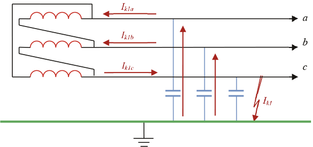The combined homopolar capacitanceCK,0of 200 km of cable of the type 3x150 Cu XLPE 6/10 is 72 μF. This capacitance is included in the additional equivalent connection in figure 10.15. The phase-to-ground short-circuit currentIk1is shown in figure 10.16 and consists of the two currentsIk1aenIk1bthrough the two phase capacitancesaenbThe voltage across each of these capacitances is equal to the coupled voltage during the short circuit. The charging current that flows through each phase due to the existing capacitance is:
 |
[ |
10.31 |
] |
As a result, the current through the equivalent capacitors is also equal to 0.238 kA. These currents flow through the phases.aenbto the transformer and the vector sum of these two currents (Ik1c) flows through the phasecto the short-circuit location. Due to the value ofXC,0by substituting into equation 10.29, the short-circuit current can be calculated, becauseIk1= Ik1c :
 |
[ |
10.32 |
] |
If this value is substituted into the formula for the phase-to-earth short-circuit current from table 10.3Zk,1=Zk,2 en Z k,0=ZK0,transverse), then follows:
[ |
10.33 |
] |
This relatively large phase-to-earth short-circuit current in the floating network is in the order of magnitude of the maximum current load of the applied cable and will, depending on the applied protection, be disconnected. If the magnitude of the phase-to-earth short-circuit current does not lead to unacceptable heating of the conductor or the earth shield of the cables, then the short circuit does not need to be immediately disconnected. This is referred to as a 'standing earth fault.' The power supply does not need to be interrupted. The earth fault can be located calmly. It is always advisable to detect an earth fault due to the risk of a second earth fault in the healthy phases. Customers connected to the low-voltage network do not notice anything in the phase-to-neutral voltages from the short circuit in the medium-voltage network. There may be a rise in the potential of the neutral and the PE (seeparagraph 5.7.3).
In a floating medium-voltage distribution network, the phase-to-ground fault current is caused by the homopolar capacitance of all cables behind the supply transformer. This fault current can become significant in a large network. By using a neutral grounding reactor, the magnitude of this fault current can be limited. The operation is based on the principle of parallel resonance between the total homopolar cable capacitance and the homopolar inductance of the neutral grounding reactor, causing the impedance of the homopolar component network to become infinitely large.
Figure 10.17 shows a network where the arc suppression coil is installed as a neutral point transformer with a homopolar impedance to ground. The homopolar reactance is equal to the sum of the homopolar transformer impedance plus three times the grounding impedance. The arc suppression coil can also be implemented with a star-delta transformer, whose star point is grounded with an impedance.
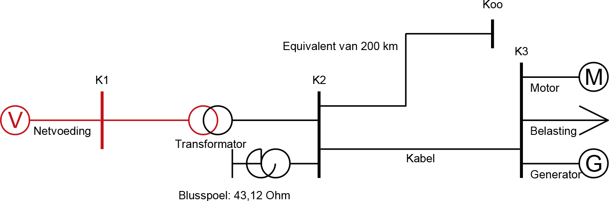For the calculation of the phase-to-ground short-circuit current, the equivalent circuit from figure 10.10.d for the short circuit in one phase with ground contact is applied, where the three component networks (normal, inverse, homopolar) are connected in series. The homopolar network is depicted in figure 10.18. To achieve parallel resonance, the total impedance from node K3 to the reference in the homopolar subnet must be infinitely large. This can be achieved by adjusting the value of X.BS,0to choose the value of the arc suppression coil correctly. This also means that with a configuration change of the network, the capacitance changes and thus the resonant frequency as well. To still achieve resonance, theoretically, the value of the arc suppression coil would need to be adjusted.
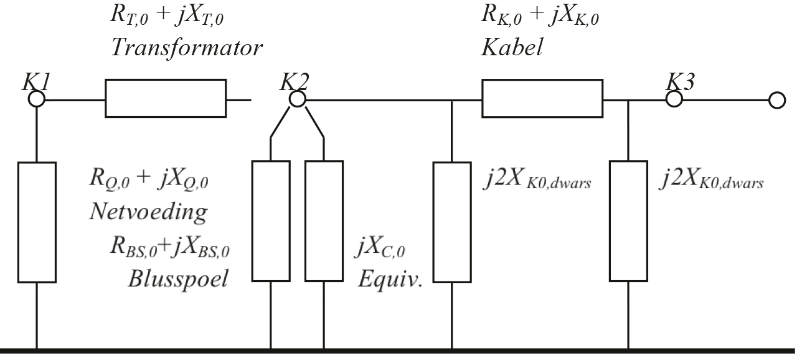The value ofZK,0,transverseis calculated in equation 10.29:
|
|
|
The value ofZCfor the equivalent connection, which represents 200 km of cable, is calculated in equation 10.32:
|
|
|
The total homopolar impedance, caused by the homopolar capacitances of the cables, is then equal to the parallel connection of these two impedances:
 |
|
|
|

For parallel resonance, the homopolar reactance of the arc suppression coil must be equal to the negative homopolar reactance of the homopolar capacitances:
 |
[ |
10.34 |
] |
The parallel connection of the arc suppression coil with the cables yields a value ofZk,0which is infinite. This value can be substituted into the formula for the phase-to-earth short-circuit current from table 10.3, resulting in the magnitude ofIk1"is zero. Figure 10.19 shows the result of the short-circuit current calculation for this fault situation. It displays all the currents around the short-circuit point in the network grounded with the arc suppression coil. At the location of the short circuit, the short-circuit current is zero. However, there is a homopolar current from the cables (138 plus 3 A) to the arc suppression coil. This is due to the parallel resonance in the homopolar circuit. Additionally, there is a current in the normal circuit from the power transformer (138 A) to the equivalent cable and to the cable leading to node K3. The current to the equivalent cable (138 A) is the capacitive charging current of all cable capacitances (total 72 μF, equal to the homopolar capacitance) in the normal circuit. The current to the cable leading to K3 (164 A) is the normal inductive load flow current to the loads and the generator connected at node K3. These currents flow in the normal circuit and are not affected by the short circuit.
Sometimes it is desirable that phase-to-earth faults in floating MV distribution networks do not persist but are immediately disconnected. The network in figure 10.7 can be grounded in two ways. In some 50/10 kV substations, transformers of the Dyn type are used. In those cases, the neutral point of the 10 kV side can be grounded either solidly or through an impedance, causing the phase-to-earth short-circuit current in the MV network to become large. Values of 8 kA can then be reached. Another grounding method, which is frequently used, employs a neutral grounding transformer.see chapter 8). Figure 10.20 provides an example of a grounding transformer, which is installed in the substation.
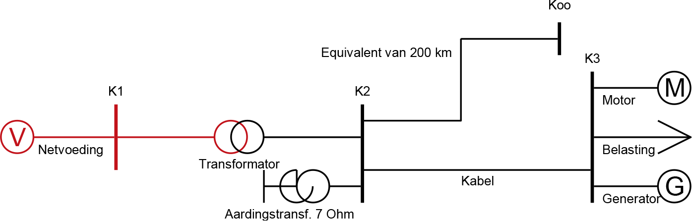The phase-to-ground fault current is now largely determined by the impedance of the grounding transformer and the capacitance to ground of all cables. To calculate the phase-to-ground fault current, the homopolar circuit of figure 10.21 must be used. In this circuit, the grounding transformer is modeled as a homopolar impedance at node K2. The homopolar impedance of the grounding transformer is 7 Ω (reactive). The homopolar impedance of the equivalent cable is represented by a single homopolar impedance at node K2. The homopolar impedance of the cable is represented with a Pi-equivalent for the homopolar capacitance (twicej2Xk0,transverse) and the homopolar longitudinal impedance (Rk,0+jXk,0). The homopolar longitudinal impedance of the cable is again neglected in this calculation.
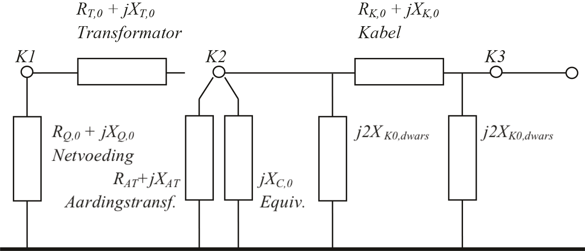The value ofZK,0,transverseis calculated in equation 10.29:
The value ofZCfor the equivalent connection, which represents 200 km of cable, is calculated in equation 10.32:
 |
The homopolar impedance of the grounding transformer is given and amounts to:
[ |
10.35 |
] |
The total homopolar impedance at the fault location is then equal to the parallel connection of the three aforementioned homopolar impedances:
 |
[ |
10.36 |
] |
This value can be substituted into the formula for the phase-to-earth short-circuit current from table 10.3Zk,1=Zk,2):
[ |
10.37 |
] |
For an accurate calculation of the short-circuit current in an LV network, the higher-level MV network must also be modeled and included in the calculation. However, for most applications, it is sufficient to perform the calculation from the MV side of the distribution transformer. In that case, the short-circuit power of the MV supply point must be known. This section explains the calculation of short-circuit currents for an LV network that is fed by a distribution transformer at node K3.

In paragraph 10.3.2, the short-circuit power at node K3 is calculated using equation 10.26. The R/X ratio at this node is calculated using formula 10.27. With this, the upstream supplying HV and MV network can be replaced by an equivalent network supply at node K3. This results in the simplified network shown in figure 10.23:

In the calculation example, it is assumed that the MV section is not grounded and that the LV section is grounded through the transformer neutral point with a resistance of 2Ω. The data of the network and the components are summarized in table 10.5.
Nodes:
|
Power supply:
|
||||||||||||||||||||||||||||||||
Transformer:
|
Cable:
|
For a short-circuit current calculation according to the IEC 60909 standard, the network is schematically represented with the network of figure 10.24 for the normal component and the network of figure 10.25 for the homopolar component.


For the calculation of the three-phase short-circuit current at node K5, the low-voltage network is shown in figure 10.24. First, the internal impedances of all components are calculated. All impedances are referenced to the voltage level at the short-circuit location. For the impedance of the power supply, corrected for the transformer turns ratio:
[ |
10.38 |
] |
For the transformer applies:
[ |
10.39 |
] |
For the cable applies:
 |
[ |
10.40 |
] |
In the diagram of figure 10.24, for fault location K5, the impedance to the left of the voltage source is equal to the series connection of the impedances of the power supply, the transformer, and the cable:
 |
[ |
10.41 |
] |
Now the three-phase short-circuit current at fault location K5 can be calculated:
 |
[ |
10.42 |
] |
The R/X ratio at fault location K5 is derived from the impedanceZk,1at the fault location (equation 10.41). FromZk,1= Rk,1+ jXk,1then follows:
 |
[ |
10.43 |
] |
With the R/X ratio and the three-phase short-circuit current, the peak short-circuit current at node K5 can be calculated according to formulas 10.3 and 10.4:
 |
[ |
10.44 |
] |
The network in figure 10.23 has a grounded low-voltage network. The phase-to-ground short-circuit current is determined by the distribution transformer, the ground resistance, and the cable. It is assumed thatZk,1=Zk,2To calculate the phase-to-ground short-circuit current, the homopolar circuit of the network must be determined. This is shown in figure 10.25. When comparing figure 10.25 with figure 10.24, it is noticeable that in the homopolar circuit, the transformer, due to the delta connection on the primary side, does not form a connection with node K3 on the medium voltage side (see alsochapter 8). The cable is initially represented with a Pi-equivalent for the homopolar capacitance (twicejXk0,transverse/2) and the homopolar longitudinal impedance (Rk,0+jXk,0), as shown in figure 10.14. Because in a low-impedance grounded LV network the cable capacitance practically plays no role, it is neglected, so the cable in the homopolar circuit is represented only by its homopolar longitudinal impedance.
The homopolar impedance of the ground spreading resistance is a factor of 3 greater than the ground spreading resistance (seechapter 7)
[ |
10.45 |
] |
For a short circuit at node K5, the impedance in the homopolar circuit is equal to the series connection of the homopolar impedance of the ground spreading resistance, the homopolar transformer impedance, and the homopolar cable impedance:
 |
[ |
10.46 |
] |
This value can be inserted into the formula for the phase-to-ground short-circuit current from table 10.3:
[ |
10.47 |
] |
As shown in the previous calculation examples, the effect of ground faults depends on the chosen grounding concept. For the three most commonly used grounding concepts, the following applies:
In the event of short circuits, the short-circuit current exerts both thermal and mechanical stress on the component. The component must be able to withstand both types of stress. This section delves into short-circuit strength. The short-circuit capacity of components is provided by the manufacturers. The value is often specified as the maximum short-circuit current in kA but is still commonly referred to as short-circuit capacity. The maximum duration that a short-circuit current is present is determined by the settings of the protection in the supplying network. This is determined by the network operator. Based on this information, the installations of the connected users can be dimensioned.
The basis of short-circuit strength is the nominal short-time current. This is the effective value of the largest short-time current (specified by the manufacturer) that the circuit can carry without damage for a given time. Unless otherwise specified by the manufacturer, the allowed duration of the short-circuit current is 1 second. The specifiedIk,1sis therefore the maximum magnitude of the short-circuit current that may flow for 1 second without damaging the respective component. It is also possible thatIk,2sspecified is: the maximum magnitude of the short-circuit current that may flow for 2 seconds.
Determinative for the short-circuit load is the initial short-circuit current.Ik"or, if this is not known, the breaking currentIAof the preceding circuit breaker and the disconnection timetKof the short circuit. From this, the effective value of the thermal short-circuit current is determined.ithcalculated (formula 10.6). For all components (cables, transformers, reactors, and switchgear) for which a short-circuit calculation has been performed, it is desirable to determine the maximum allowable short-circuit duration.tmax to be calculated based on the short-time current specified by the suppliersIk,1sofIk,2s.
The heating of the cable during a short circuit is an adiabatic process. This means that the heating of the conductor occurs over such a short period that no heat exchange with the surroundings takes place during that time. All the heat is then stored in the conductor. The conductor must not become hotter than a specified value. For most XLPE cables, this is 250 °C. The initial temperature value before the onset of the short circuit is also important. It is customary to assume the continuous maximum temperature, which for XLPE cables is 90 °C.
The permissible short-circuit current of a specific cableIkas a function of the duration of this constant current, calculated as follows (Heinhold, 1999):
| [kA] | [ |
10.48 |
] |
with:
| K | constant (0.095 for aluminum and 0.143 for copper conductor) for heating from 90°C to 250°C |
| t | time that the short-circuit current flows (s) |
| A | conductor cross-section (mm)2) |
The constantKis calculated from the material properties and the initial and final temperatures:
 |
[ |
10.49 |
] |
with:
| k1 | constant: 148 for aluminum and 226 for copper conductor |
| k2 | temperature factor, dependent on material properties and the initial and final temperatures |
The variablek2is calculated from a material-dependent temperature coefficient and the initial and final temperatures:
 |
[ |
10.50 |
] |
with:
| θ | constant (228 for aluminum and 234.5 for copper conductor) |
| θfinal | maximum allowable short-circuit temperature (250 °C for XLPE cable) |
| θinitial | conductor temperature before the start of the short circuit (90 °C for XLPE cable) |
Figure 10.26 shows the allowable short-circuit current, as calculated with formula 10.48 for a cable with a copper conductor and a cable with an aluminum conductor, both with a conductor cross-section of 95 mm².2and an initial temperature of 90 °C and a final temperature of 250 °C.

For cables, it is customary to work with the permissible short-circuit current that may flow for one second:Ik,1sTable 10.6 provides the value ofIk,1sfor some common plastic cables. This is based on a temperature increase of the conductor from 90°C to 250°C. Different values apply to the shield. The values for the shield are important in the case of phase-to-ground faults. It may be that the shield, rather than the conductor, is the limiting factor for short-circuit resistance. For the values in Table 10.6, a temperature increase of the shield from 50°C to 250°C has been assumed.
Materiaal |
Geleider |
Cu shield |
||
Cross-section (mm²)2) |
Ik,1s(kA) |
Cross-section (mm)2) |
Ik,1s(kA) |
|
Al |
50 |
4.8 |
25 |
4.1 |
95 |
9.0 |
25 |
4.1 |
|
150 |
14.1 |
25 |
4.1 |
|
240 |
22.6 |
50 |
8.2 |
|
Cu |
50 |
7.1 |
25 |
4.1 |
95 |
13.5 |
25 |
4.1 |
|
150 |
21.4 |
25 |
4.1 |
|
240 |
34.2 |
50 |
8.2 |
|
The maximum time that a calculated short-circuit current is allowed to flow through a cable is then (Heinhold, 1999):
[ |
10.51 |
] |
with:
| tmax | maximum allowable short-circuit duration (s) |
| Ik,1s | allowable short-circuit current for 1 second (kA) |
| ith | effective value of the short-circuit current in the branch (kA) |
The thermal short-circuit withstand capability of a transformer is determined by the steady-state short-circuit current and the maximum allowable thermal load of the insulation material. The duration of the steady-state short-circuit current is set at 2 seconds, unless the network designer chooses a different value.
The temperature rise of the windings can be calculated using the formula below (NEN-EN-IEC 60076-5):
[ |
10.52 |
] |
with:
| T0 | initial temperature (°C) |
| T1 | final temperature (°C) |
| Jk | current density in the windings (A/mm²)2) |
| tk | duration of the short circuit (s) |
| G | material constant (A)2s/mm4); Cu:G = 101000; Al: G = 35000G = 45400 |
The maximum allowable temperature is specified by the manufacturer. This depends on the transformer type (oil-filled or dry) and the insulation temperature class. The maximum time that a calculated short-circuit current is allowed to flow through a cable is then:
[ |
10.53 |
] |
with:
| tmax | maximum allowable short-circuit duration (s) |
| Ik,2s | allowable short-circuit current for 2 seconds (kA) |
| ith | effective value of the short-circuit current in the branch (kA) |
The breaking currents and continuous currents for which switching equipment is dimensioned are specified in various IEC publications. For switchgear installations and their components, a duration of 1 second is maintained for the thermal short-time current. If deviation from this is necessary, 3 seconds is recommended. During this time, the equipment must be able to withstand the heat and mechanical forces resulting from the assigned short-circuit current.
The maximum amplitude of the short-circuit current determines the mechanical load on the installation. In the IEC publications, it is assumed that the peak short-circuit current is 2.5 times the effective value of the steady-state short-circuit current. For most applications, this will be sufficient. However, larger values can occur close to the generators. The maximum allowable peak short-circuit current for various types of installations is derived from the standard series.
Load disconnectors can be either single-pole or three-pole. The single-pole variant is the cheapest and is by far the most commonly used in the medium voltage distribution network. For connections with network transformers with a nominal power greater than 1000 kVA, three-pole disconnection is applied.
Table 10.7 provides an overview of some medium voltage switchgear installations frequently used in the Netherlands. The data is sourced from the manufacturer's brochures.
Type |
Unom (kV) |
Inom (A) |
Ik,max(kA/s) |
Ip,max(kA) |
Innovac MMS |
12 |
3150 |
31.5/3 |
80 |
17.5 |
3150 |
31.5/3 |
80 |
|
24 |
2000 |
25/3 |
63 |
|
Unitole UP |
3.6-17.5 |
630-3150 |
40/3 |
100 |
Innovac SVS06 |
12 |
630 |
20/1 |
50 |
24 |
630 |
20/1 |
50 |
|
Innovac SVS12 |
12 |
1250 |
25/1.5 |
63 |
24 |
1250 |
25/1.5 |
63 |
|
Xiria |
12 |
200-500 |
20/3 |
50 |
24 |
200-500 |
16/3 |
40 |
|
Magnefix MD4 |
12 |
400 |
14.4/1 |
31 |
Magnefix MF |
15 |
630 |
20/1 |
50 |
The short-circuit power in a distribution network is primarily determined by the impedances of the transformers, the impedances of any existing generators, the network structure, and the location of the short circuit. If a component cannot withstand the expected steady-state and dynamic short-circuit current, the short-circuit power must be limited in magnitude, duration, or both. This can be achieved through the application of distance protection, differential protection, or fast current-time protections. Additionally, the magnitude of the short-circuit current can be limited by interrupting the short-circuit current before it reaches its expected maximum value. This can be done using fuses and Is-limiterssee chapter 4).
The duration in which the short circuit is allowed to occur can be limited with fast protection such as distance protection. For the sake of selectivity, differential protection is also often applied alongside distance protection. Most current-time protections have the capability to disconnect the current within a very short time once it exceeds a set threshold value.see chapter 6).
By adding an extra impedance to the network, the maximum occurring short-circuit current can be limited. Usually, inductors are used for this purpose. Additionally, the short-circuit power can be limited by installing a busbar separation.
The application of the inductor is explained using the network in figure 10.27. According to equation 10.19 inparagraph 10.3.2the short-circuit contribution from the power supply to a three-phase short circuit directly at the beginning of the cable, thus at the secondary terminals of the power transformer in the substation, is equal to 15 kA. Interposing an inductor, as shown in figure 10.27, will reduce the magnitude of this short-circuit current.

In this example, the choke coil has a nominal current of 320 A and a reactance of 0.3 Ω. From the load flow calculation of the network configuration in figure 10.27, it follows that the choke coil at node K2a causes a limited voltage drop from 10.424 kV to 10.373 kV (0.5% voltage drop) with a power transfer of 2.5 MW and 1.8 Mvar (166 A). This is also confirmed by the approximation formula from chapter 10 for the voltage difference across the choke coil:
[ |
10.54 |
] |
The impedance to the left of the fault location K2a is equal to the series connection of the impedances of the power supply, the transformer, and the choke coil:
 |
[ |
10.55 |
] |
A three-phase short circuit at the beginning of the cable, practically at the node K2a, then leads to a short-circuit current contribution from the power supply of:
 |
[ |
10.56 |
] |
The choke coil thus has a significant impact on reducing the short-circuit current from 15 kA to 8.8 kA, while its influence on the load flow in this example is limited.
The method according to IEC 60909 calculates only the short-circuit currents in a network. The voltages during a short circuit are not explicitly calculated. In some cases, it is interesting for the designer to know exactly how the network behaves in special cases, for example in a complex network or in cases where special generators or machines are present. In such instances, a method is used that calculates not only the currents but also the voltages of the network, without making the simplifications that are used in the IEC 60909 method.
The method of sequential short-circuit current calculation is based on the actual load situation and calculates the complete state of the network. The operation of specific protections that consider both current and voltage in their functioning can thus be better analyzed. The method is called 'sequential' because it allows for the simulation of more than one fault successively. For example, it is possible in networks for a phase-to-ground short circuit to lead to a subsequent short circuit at another location. Additionally, the method allows for the calculation of other types of short circuits besides direct ones. The fault impedance of the short circuit can be specified in the calculation.
The method of sequential fault analysis is based on the situation determined by the load flow before the onset of the short circuit. The power supply and the synchronous and asynchronous machines are modeled in the method as a Norton equivalent with a current source and a short-circuit impedance. The current strength of each current source is calculated based on the load flow voltage before the disturbance. The loads are modeled with constant impedances, which are derived from their actual value. Any transversal elements, such as shunts and capacitances, are also included in the calculation. The method neglects nothing and does not use correction factors.
The equivalent circuit of the network in figure 10.7, for the calculation according to the method of sequential short-circuit current calculation in the normal system, appears as shown in figure 10.28.

At node K2, a three-phase symmetrical fault is applied in the form of impedanceRf+ jXf. With the sequential fault analysis, the subtransient short-circuit currentIk"calculated at the indicated fault location. Additionally, all voltages, branch currents, and element currents are calculated. Currents and voltages can be represented both complex and absolute per phase (a, b, c) or per system (homopolar, normal, inverse). In the equivalent circuit diagram of figure 10.7, the short circuit at node K2 is fed by the grid supply and the transformer, as well as by the short-circuit current contributions from the generator and the motor. Furthermore, the load in the short-circuit situation is not neglected, so it continues to draw the current determined by the equivalent impedance.
In a calculation example, it is demonstrated how the method can be used to process a series of consecutive actions (short circuits and switching operations) that result in changes to the network. A main feeder, consisting of three parallel circuits with cables with conductors of 150 mm2Cu and 240 mm²2Al, feeds an MV distribution network from a 50/10 kV substation. The MV distribution network is not explicitly modeled but is represented by a load of 7.8 MW with a power factor (cos(φ)) of 0.9 (500 A at nominal voltage). The network is not grounded. At the substation, 30 MVA of decentralized generation is connected, which is modeled with a single synchronous generator. The network between the substation with supply and the switching station is depicted in figure 10.29. The depicted voltages are phase voltages.

For the network shown in figure 10.29, the currents and voltages have been monitored over an extended period as part of an experiment. During this period, a two-phase short circuit with ground contact occurred in one of the feeder cables at 60% of the distance from the substation. The progression of the short circuit was recorded at the substation. Figure 10.30 shows the progression in the measured current through the phases on the feeding side and in the measured voltage on the feeding busbar in the substation.
The short circuit between phases A, C, and ground occurs at t = 990 ms. The influence of the decreasing short-circuit contribution from the generator is clearly visible. It is also evident that the peak in phase C is positive and in phase A is negative. The initial short-circuit current has an effective value of approximately 6.4 kA. The voltage of the disturbed phases decreases significantly, and the voltage of the undisturbed phase increases significantly: up to an effective value of 8.3 kV.
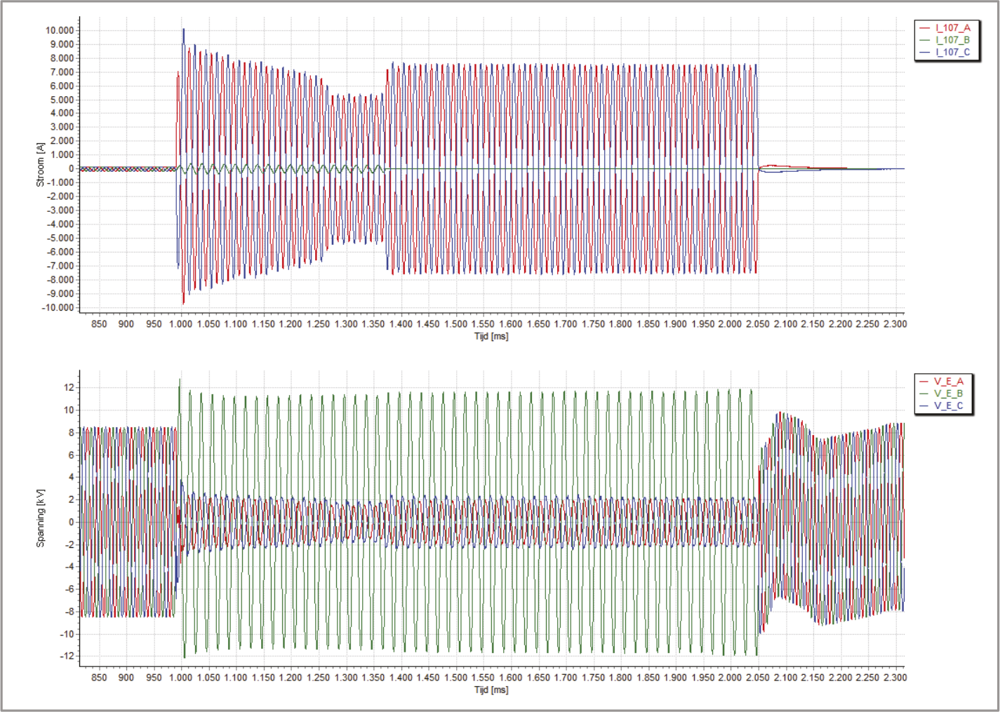After 290 ms, at t = 1280 ms, the decentralized generation is switched from the grid. As a result of the decreased short-circuit power in the substation, the supply of the short-circuit current is reduced to an effective value of approximately 3.8 kA.
After 380 ms, at t = 1370 ms, the circuit breaker in the short-circuited circuit on the substation side opens. The protection is directional, allowing for a quick disconnection. This ensures that the supply to the grid beyond the substation can continue. The short circuit is now only fed from the substation. The supply of the short-circuit current increases to an effective value of approximately 5.4 kA.
After 1060 ms, at t = 2050 ms, the circuit breaker in the short-circuited circuit on the substation side opens. The set time is chosen with selectivity in mind. The voltage recovers immediately, with a rapidly decaying direct current component visible.
The course of the fault has been simulated using the highly simplified model of the complete distribution network, depicted in figure 10.29. The supplying network has a short-circuit power of 3600 MVA (Ik" = 40 kA at 52.5 kV) and the transformer has a nominal power of 32 MVA and a relative short-circuit voltage of 19.3%. The cable circuits each have a length of 3 km and consist of cables with 150 mm2Cu conductors and 240 mm2Aluminum conductors, resulting in a normal impedance of Z1 = 0.426+j0.238 Ω and a homopolar impedance of Z0 = 3.154+j3.253 Ω. A short circuit was simulated at 60% of the distance from the substation.
Figure 10.31 shows the result for the calculation of the two-phase short circuit between phases A and C with ground contact. The feeding current in the short-circuited circuit at the substation is 6.5 kA. This is slightly more than the effective value recorded in Figure 10.30. The voltage in the undisturbed phase is 8.9 kV.
Figure 10.32 shows the result of the calculation, where the generator is disconnected at t = 1280 ms. The supply of the short circuit from the substation has decreased to 3.7 kA. This is slightly less than the effective value recorded in Figure 10.30. The contribution from the other two circuits is 2.5 kA. The total short-circuit current amounts to 6.2 kA.
Figure 10.33 shows the result of the calculation, where at t = 1370 ms the circuit breaker in the faulty circuit on the substation side is tripped. The supply of the short-circuit current from the substation is now equal to the short-circuit current itself and amounts to 5.6 kA. This value is slightly less than the effective value recorded in Figure 10.30.
Faults in the medium-voltage network have the greatest impact on the reliability of electricity supply (seechapter 12It is customary after a short circuit to locate the fault by inspecting each substation in a medium-voltage string, which is very time-consuming. By estimating the fault location based on voltage and current measurements in the substation during the short circuit and comparing these with a short-circuit calculation of the network model, a lot of time can be saved (Oirsouw, 2003). The accuracy of the method is closely related to the precision of the model and the accuracy of the measurement. The normal impedances of the network are sufficiently well-known, so in the case of a two- or three-phase short circuit, high accuracy can be achieved. However, the homopolar impedance is not always accurately known, so the fault location in the case of a phase-to-ground fault can often be calculated with less precision.
The measurement can be performed using station automation equipment or digital protection relays. Voltage and current are continuously measured and locally stored for a short period. If a disturbance occurs, the measurements are sent to a central system. The data is then analyzed in two steps. In the first step, the measurements are transformed into signals that represent the instantaneous amplitudes and phases. The instantaneous values of the symmetrical components are also determined from these signals. Each fault exhibits characteristic behavior in the normal, inverse, and homopolar components. By comparing the instantaneous values of the symmetrical components with the characteristic properties of various fault types, the fault type is identified. This process uses a set of knowledge rules derived from practical measurements and the component networks for the short-circuit types shown in figure 10.10:
The aforementioned knowledge rules are summarized as the characteristic properties of short-circuit types in Table 10.8. By comparing the measurements with this table, the actual type of short circuit can be determined.
Kortsluittype |
I1> I1,pre |
I0> 0 |
I2> 0 |
I1–I1,pre>> I0 |
I2>> I0 |
Phase-to-earth |
Ja |
Ja |
Ja |
Nee |
Nee |
Two-phase-to-earth |
Ja |
ja |
Ja |
Ja |
Ja |
Two phases |
Ja |
Nee |
ja |
Ja |
Ja |
Three phases |
Ja |
Nee |
Nee |
Ja |
Nee |
It is also possible to detect whether an asymmetrical short circuit occurs in a grounded or ungrounded network. This can be derived from the quotient of the homopolar voltage and negative homopolar current determined from the measurements.
 Ohm Ohm |
[ |
10.57 |
] |
The phase angle of the impedanceZggives an indication of whether the fault current has an inductive or capacitive character. The magnitude of the impedance is also related to the grounding impedance in the network. Table 10.9 provides a summary of the characteristic properties related to grounding.
Netwerktype |
|Zg| (Ω) |
Arg(Zg) (degrees) |
Impedantiegeaard |
Z0aardingssysteem |
90 |
Zwevend |
1/(2 π f ⋅ C)0network) |
–90 |
It turns out that the absolute value and the phase angle of the impedanceZgin Table 10.9 depends on the way the network is grounded. In a grounded system, the calculated impedanceZgis nearly equal to the homopolar impedanceZ0of the grounding system (grounding transformer or star-point grounded transformer). The angle of the calculated impedance is then approximately 90 degrees. In an ungrounded network, the calculated impedanceZgapproximately equal to the impedance of the total homopolar capacitance in the floating medium voltage network. The angle of the calculated impedance is then approximately –90 degrees.
With the knowledge of the type of short circuit, the impedance from the measurement location to the short circuit location can be calculated. Since the resistance at the fault location is not always zero, only the reactance part of the impedance is considered. Table 10.10 provides a summary of the reactance calculations.X1enX0for the various fault types from the measured voltagesU1,U2enU0and measured currentsI1enI2The calculations are based on the standard situations from figure 10.10 and table 10.3.
Kortsluittype |
Reactance from measurement location to fault location |
Phase-to-ground |
2X1+ X0= Im((U1+ U2+ U0) / I2) |
Two phases B-C-ground |
X1= Im((U1– U2) / (I1– I2)) |
Two phases A-B-ground |
X1= Im((U1– a ⋅ U2) / (I1– a ⋅ I2)) |
Two phases A-C-ground |
X1= Im((U1– a2 ⋅ U2) / (I1– a2 ⋅ I2)) |
Two phases B-C |
X1= Im((U1– U2) / (I1– I2)) |
Two phases A-B |
X1= Im((U1– a ⋅ U2) / (I1– a ⋅ I2)) |
Two phases A-C |
X1= Im((U1– a2 ⋅ U2) / (I1– a2 ⋅ I2)) |
Three phases |
X1= Im(U1/ I1) |
In the second step, the network model is analyzed. Based on the measurement data before the short circuit, the loads are set. Subsequently, short circuit calculations are made using the sequential short circuit current calculation. Short circuits are introduced at successive distances from the measurement location in the MV string, and the impedance from the measurement location to the fault location is determined each time. The reactance of this impedance is compared with the value calculated from the measurements in the first step. The location where the calculated reactance best matches the reactance determined from the measurements is the most likely fault location.
The method described above is illustrated using the recording from figure 10.30 of a short circuit in the network of figure 10.29. The measurement took place at the substation. The first step involves converting and analyzing the measured values. The currents and voltages from figure 10.30 are first converted into a signal that represents the instantaneous variation of the phase voltage and phase current amplitudes. Figure 10.34 shows the peak value of all signals. Figure 10.34 clearly shows that the short circuit begins at t = 990 ms. The amplitudes of the currents in phases A and C reach a high value, which remains fairly constant between t = 1400 ms and t = 2050 ms. At t = 2050 ms, the short circuit is disconnected. It can also be seen that the current in phase B changes relatively little. This is an indication of a short circuit in phases A and C. The amplitudes of the voltages in phases A and C decrease significantly but do not reach zero. This indicates that the short circuit is located further down the network.

The voltages and currents of phases A, B, and C provide an initial indication of the type and location of the short circuit. The described algorithm in a calculation program does not operate in the three-phase system but uses the measured values transformed into the symmetrical component system. The transformation of the signals from Figure 10.34 produces the signals shown in Figure 10.35.
Figure 10.35 shows that the currents in the normal and inverse component systemsI1enI2) increase significantly due to the short circuit. The amplitude of both component currents is approximately equal. Between t = 1400 ms and t = 2050 ms, the peak value is about 4300 A and the effective value is 3050 A. The amplitude of the homopolar currentI0) cannot be accurately derived from the figure. The measurements indicate thatI0= 25A. For the voltages, the effective values are:U0= 2.9kV,U1= 3.6kV andU2= 2.2kV.
With this data, the type of short circuit is first determined using Table 10.8:
| I1> I1,pre | yes, so short circuit |
| I0> 0 | yes, so short circuit with ground contact |
| I2> 0 | yes, so short circuit with one or two phases |
| I1– I1,pre>> I0 | yes, so short circuit with two or three phases |
| I2>> I0 | yes, so short circuit with two phases |
From this, it is concluded that it is a two-phase short circuit with ground contact. Using formula 10.57, the impedance is calculated.Zgdetermined. For this calculation, both the amplitude and the phase angle ofU0enI0needed. From the measurements, it appears that the phase angle for the homopolar voltage is 77 degrees and for the homopolar current is -34 degrees. From this, it is calculated:|Zg| = 116Ω and phase angle ofZgis: –69 degrees. Based on table 10.9, it is concluded that it concerns a short circuit in a floating network, because the phase angle is closest to the theoretical value of –90 degrees. The total homopolar capacitance of all the medium-voltage cables connected to the substation in the network (not shown in figure 10.29) is:C0= 1/(2π⋅f⋅Zg) = 2.7⋅10-5F, which corresponds to a total length of 135 km of cables connected to the substation (at an average value ofC0= 0.2 μFper km).
Using table 10.10, the reactance from the measurement point at the substation to the fault location can be calculated. This is for the two-phase A-C ground fault:
X1= Im((U1–a2⋅U2) / (I1–a2⋅I2)) = 0.14 Ohms.
where:
| U1= 3624 V, | with phase angle –170 degrees |
| U2= 2233 V, | with phase angle –28 degrees |
| I1= 3053 A, | with phase angle 133 degrees |
| I2= 3073 A, | with phase angle 73 degrees |
| aena2: | the complex operatorsaena2(see paragraph 7.5) |
If, as inparagraph 10.6.2assumed, the total reactance of the cable in this example is equal toZ1= 0.238 Ω, then the short circuit is located at 0.14/0.238⋅100% = 60% of the substation.
Phase to Phase is onderdeel van Technolution. © 2009-2021